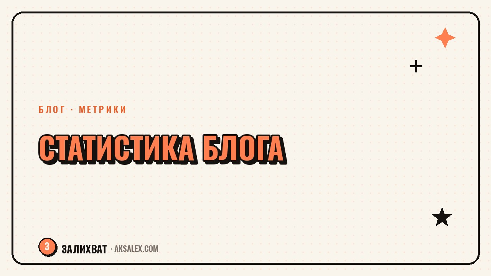

Как анализировать статистику блога и расти

Многие смотрят в статистику блога раз в неделю, видят цифру просмотров и на этом останавливаются. Но одна цифра почти ничего не говорит о том, что делать дальше. Расти получается у тех, кто читает статистику как набор сигналов: где зритель уходит, что удерживает внимание, какой формат заходит лучше остальных. Разберём, на какие метрики смотреть в первую очередь, как их правильно интерпретировать и чем здесь могут помочь нейросети.
Зачем вообще разбираться в статистике
Без регулярного анализа блог растёт случайно - иногда заходит ролик, иногда нет, а почему именно так, непонятно. Статистика превращает догадки в конкретные наблюдения: ты видишь, на какой секунде зритель отваливается, какой заголовок собирает больше кликов и в какое время аудитория активнее.
Важно смотреть не на разовый результат одного ролика, а на динамику за несколько недель. Один вирусный ролик может исказить картину, а стабильный рост средних показателей говорит о том, что формат и подача действительно работают на аудиторию.
Какие метрики важны, а какие нет
Не все цифры в статистике одинаково полезны. Количество подписчиков приятно видеть, но само по себе оно не объясняет, почему растёт или падает охват. Полезнее смотреть на метрики, которые напрямую связаны с поведением зрителя внутри ролика.
На что смотреть в первую очередь
- Процент досмотра - показывает, удерживает ли ролик внимание до конца
- Точка обрыва - момент, где зрители чаще всего уходят
- Доля показов из рекомендаций - говорит, продвигает ли платформа ролик сама
- Сохранения и репосты - косвенный сигнал ценности контента для зрителя
Как читать основные показатели
Одна и та же цифра может значить разное в зависимости от формата и длины ролика. Ниже - ориентир, как интерпретировать типичные ситуации в статистике.
| Что видишь в статистике | Что это может значить | Что проверить |
|---|---|---|
| Высокие просмотры, мало досмотров | Заголовок или обложка сильнее содержания | Первые 3 секунды ролика |
| Хороший досмотр, мало охвата | Платформа пока не продвигает ролик широко | Тайминг публикации и теги |
| Много сохранений, мало лайков | Контент полезный, но не вызывает эмоций сразу | Формулировку подачи темы |
| Резкий рост на одном ролике | Формат или тема попали в интерес аудитории | Стоит повторить формат с вариацией |
Статистика не говорит, что делать - она показывает, где искать причину. Решение всё равно принимаешь ты.
Как нейросети помогают анализировать данные
Ручной просмотр десятков роликов в поисках закономерностей занимает много времени. Нейросети умеют быстрее находить связи в больших массивах данных: например, сопоставлять длину ролика с досматриваемостью или сравнивать формулировки заголовков с их кликабельностью.
Практическая схема простая - выгружаешь статистику за период в таблицу и просишь нейросеть выделить закономерности: какие темы или форматы стабильно дают лучший результат, а какие проседают. Это не заменяет твоё решение, но экономит время на ручной сортировке цифр.
Частые ошибки при анализе статистики
Самая частая ошибка - делать выводы по одному ролику. Случайный успех или провал может быть связан с внешними факторами, а не с качеством контента.
- Сравнение роликов разной длины и формата между собой напрямую
- Игнорирование сезонности и внешних инфоповодов
- Реакция на статистику слишком рано, пока не набралось достаточно данных
- Фокус только на охвате без внимания к досматриваемости и вовлечению
Частые вопросы
Как часто стоит проверять статистику блога?
Раз в неделю для отслеживания динамики достаточно, ежедневные проверки чаще мешают, потому что заставляют реагировать на случайные колебания.
Какая метрика важнее всего для роста охвата?
Процент досмотра и точка обрыва - они напрямую влияют на то, продвигает ли платформа ролик в рекомендации.
Можно ли доверять нейросети в анализе статистики полностью?
Нейросеть хорошо находит закономерности в цифрах, но контекст твоей аудитории и ниши всё равно нужно учитывать самому.
Что делать, если ролик набрал охват, но мало досмотров?
Проверь первые секунды ролика и соответствие обложки содержанию - чаще всего разрыв ожиданий возникает именно там.
Стоит ли сравнивать свою статистику с блогами конкурентов?
Полезно смотреть на общие тренды формата, но ориентироваться лучше на собственную динамику, потому что аудитории и ниши редко полностью совпадают.
а не вручную